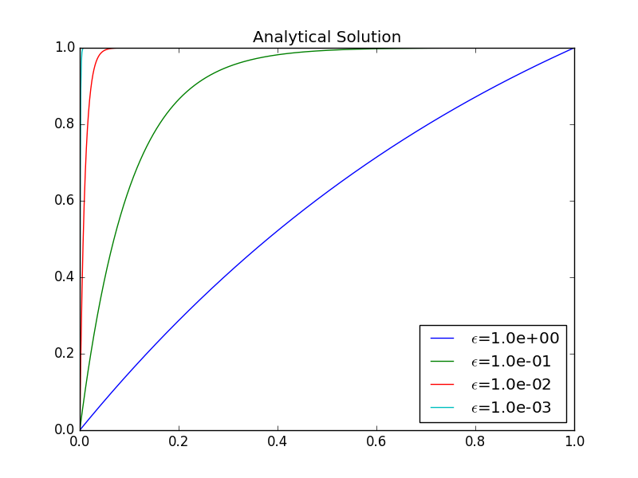

Examples on variational formulations
The following sections derive variational formulations for some prototype differential equations in 1D, and demonstrate how we with ease can handle variable coefficients, mixed Dirichlet and Neumann boundary conditions, first-order derivatives, and nonlinearities.
Variable coefficient
Consider the problem $$ \begin{equation} -\frac{d}{dx}\left( \dfc(x)\frac{du}{dx}\right) = f(x),\quad x\in\Omega =[0,L],\ u(0)=C,\ u(L)=D\tp \tag{4.51} \end{equation} $$ There are two new features of this problem compared with previous examples: a variable coefficient \( \dfc (x) \) and nonzero Dirichlet conditions at both boundary points.
Let us first deal with the boundary conditions. We seek $$ u(x) = B(x) + \sum_{j\in\If} c_j\baspsi_i(x)\tp$$ Since the Dirichlet conditions demand $$ \baspsi_i(0)=\baspsi_i(L)=0,\quad i\in\If,$$ the function \( B(x) \) must fulfill \( B(0)=C \) and \( B(L)=D \). The we are guaranteed that \( u(0)=C \) and \( u(L)=D \). How \( B \) varies in between \( x=0 \) and \( x=L \) is not of importance. One possible choice is $$ B(x) = C + \frac{1}{L}(D-C)x,$$ which follows from (4.48) with \( p=1 \).
We seek \( (u-B)\in V \). As usual, $$ V = \hbox{span}\{\baspsi_0,\ldots,\baspsi_N\}\tp$$ Note that any \( v\in V \) has the property \( v(0)=v(L)=0 \).
The residual arises by inserting our \( u \) in the differential equation: $$ R = -\frac{d}{dx}\left( \dfc\frac{du}{dx}\right) -f\tp $$ Galerkin's method is $$ (R, v) = 0,\quad \forall v\in V, $$ or written with explicit integrals, $$ \int_{\Omega} \left(-\frac{d}{dx}\left( \dfc\frac{du}{dx}\right) -f\right)v \dx = 0,\quad \forall v\in V \tp $$ We proceed with integration by parts to lower the derivative from second to first order: $$ -\int_{\Omega} \frac{d}{dx}\left( \dfc(x)\frac{du}{dx}\right) v \dx = \int_{\Omega} \dfc(x)\frac{du}{dx}\frac{dv}{dx}\dx - \left[\dfc\frac{du}{dx}v\right]_0^L \tp $$
The boundary term vanishes since \( v(0)=v(L)=0 \). The variational formulation is then $$ \int_{\Omega} \dfc(x)\frac{du}{dx}\frac{dv}{dx}\dx = \int_{\Omega} f(x)v\dx,\quad \forall v\in V\tp $$ The variational formulation can alternatively be written in a more compact form: $$ (\dfc u',v') = (f,v),\quad \forall v\in V \tp $$ The corresponding abstract notation reads $$ a(u,v)=L(v)\quad\forall v\in V,$$ with $$ a(u,v)= (\dfc u',v'),\quad L(v)=(f,v) \tp $$
We may insert \( u=B + \sum_jc_j\baspsi_j \) and \( v=\baspsi_i \) to derive the linear system: $$ (\dfc B' + \dfc \sum_{j\in\If} c_j \baspsi_j', \baspsi_i') = (f,\baspsi_i), \quad i\in\If \tp $$ Isolating everything with the \( c_j \) coefficients on the left-hand side and all known terms on the right-hand side gives $$ \sum_{j\in\If} (\dfc\baspsi_j', \baspsi_i')c_j = (f,\baspsi_i) + (\alpha (D-C)L^{-1}, \baspsi_i'), \quad i\in\If \tp $$ This is nothing but a linear system \( \sum_j A_{i,j}c_j=b_i \) with $$ \begin{align*} A_{i,j} &= (\alpha \baspsi_j', \baspsi_i') = \int_{\Omega} \dfc(x)\baspsi_j'(x), \baspsi_i'(x)\dx,\\ b_i &= (f,\baspsi_i) + (\alpha (D-C)L^{-1},\baspsi_i')= \int_{\Omega} \left(f(x)\baspsi_i(x) + \dfc(x)\frac{D-C}{L}\baspsi_i'(x)\right) \dx \tp \end{align*} $$
First-order derivative in the equation and boundary condition
The next problem to formulate in terms of a variational form reads $$ \begin{equation} -u''(x) + bu'(x) = f(x),\quad x\in\Omega =[0,L],\ u(0)=C,\ u'(L)=E\tp \tag{4.52} \end{equation} $$ The new features are a first-order derivative \( u' \) in the equation and the boundary condition involving the derivative: \( u'(L)=E \). Since we have a Dirichlet condition at \( x=0 \), we must force \( \baspsi_i(0)=0 \) and use a boundary function to take care of the condition \( u(0)=C \). Because there is no Dirichlet condition on \( x=L \) we do not make any requirements to \( \baspsi_i(L) \). The simplest possible choice of \( B(x) \) is \( B(x)=C \).
The expansion for \( u \) becomes $$ u = C + \sum_{j\in\If} c_j \baspsi_i(x) \tp $$
The variational formulation arises from multiplying the equation by a test function \( v\in V \) and integrating over \( \Omega \): $$ (-u'' + bu' - f, v) = 0,\quad\forall v\in V$$ We apply integration by parts to the \( u''v \) term only. Although we could also integrate \( u' v \) by parts, this is not common. The result becomes $$ (u',v') + (bu',v) = (f,v) + [u' v]_0^L, \quad\forall v\in V \tp $$ Now, \( v(0)=0 \) so $$ [u' v]_0^L = u'(L)v(L) = E v(L),$$ because \( u'(L)=E \). Thus, integration by parts allows us to take care of the Neumann condition in the boundary term.
Since homogeneous Neumann conditions can be incorporated without "doing anything" (i.e., omitting the boundary term), and non-homogeneous Neumann conditions can just be inserted in the boundary term, such conditions are known as natural boundary conditions. Dirichlet conditions require more essential steps in the mathematical formulation, such as forcing all \( \basphi_i=0 \) on the boundary and constructing a \( B(x) \), and are therefore known as essential boundary conditions.
The final variational form reads $$ (u',v') + (bu',v) = (f,v) + E v(L), \quad\forall v\in V \tp $$ In the abstract notation we have $$ a(u,v)=L(v)\quad\forall v\in V,$$ with the particular formulas $$ a(u,v)=(u',v') + (bu',v),\quad L(v)= (f,v) + E v(L)\tp $$
The associated linear system is derived by inserting \( u=B+\sum_jc_j\baspsi_j \) and replacing \( v \) by \( \baspsi_i \) for \( i\in\If \). Some algebra results in $$ \sum_{j\in\If} \underbrace{((\baspsi_j',\baspsi_i') + (b\baspsi_j',\baspsi_i))}_{A_{i,j}} c_j = \underbrace{(f,\baspsi_i) + E \baspsi_i(L)}_{b_i} \tp $$ Observe that in this problem, the coefficient matrix is not symmetric, because of the term $$ (b\baspsi_j',\baspsi_i)=\int_{\Omega} b\baspsi_j'\baspsi_i \dx \neq \int_{\Omega} b \baspsi_i' \baspsi_j \dx = (\baspsi_i',b\baspsi_j) \tp $$
Nonlinear coefficient
Finally, we show that the techniques used above to derive variational forms apply to nonlinear differential equation problems as well. Here is a model problem with a nonlinear coefficient \( \alpha(u) \) and a nonlinear right-hand side \( f(u) \): $$ \begin{equation} -(\dfc(u)u')' = f(u),\quad x\in [0,L],\ u(0)=0,\ u'(L)=E \tp \tag{4.53} \end{equation} $$ Our space \( V \) has basis \( \sequencei{\baspsi} \), and because of the condition \( u(0)=0 \), we must require \( \baspsi_i(0)=0 \), \( i\in\If \).
Galerkin's method is about inserting the approximate \( u \), multiplying the differential equation by \( v\in V \), and integrate, $$ -\int_0^L \frac{d}{dx}\left(\dfc(u)\frac{du}{dx}\right)v \dx = \int_0^L f(u)v \dx\quad\forall v\in V \tp $$ The integration by parts does not differ from the case where we have \( \dfc(x) \) instead of \( \dfc(u) \): $$ \int_0^L \dfc(u)\frac{du}{dx}\frac{dv}{dx}\dx = \int_0^L f(u)v\dx + [\dfc(u)vu']_0^L\quad\forall v\in V \tp $$ The term \( \dfc(u(0))v(0)u'(0)=0 \) since \( v(0) \). The other term, \( \dfc(u(L))v(L)u'(L) \), is used to impose the other boundary condition \( u'(L)=E \), resulting in $$ \int_0^L \dfc(u)\frac{du}{dx}\frac{dv}{dx}\dx = \int_0^L f(u)v\dx + \dfc(u(L))v(L)E\quad\forall v\in V, $$ or alternatively written more compactly as $$ (\dfc(u)u', v') = (f(u),v) + \dfc(u(L))v(L)E\quad\forall v\in V \tp $$ Since the problem is nonlinear, we cannot identify a bilinear form \( a(u,v) \) and a linear form \( L(v) \). An abstract formulation is typically find \( u \) such that $$ F(u;v) = 0\quad\forall v\in V,$$ with $$ F(u;v) = (a(u)u', v') - (f(u),v) - a(L)v(L)E \tp $$
By inserting \( u=\sum_j c_j\baspsi_j \) and \( v=\baspsi_i \) in \( F(u;v) \), we get a nonlinear system of algebraic equations for the unknowns \( c_i \), \( i\in\If \). Such systems must be solved by constructing a sequence of linear systems whose solutions hopefully converge to the solution of the nonlinear system. Frequently applied methods are Picard iteration and Newton's method.
Implementation of the algorithms
Our hand calculations can benefit greatly by symbolic computing, as shown
earlier, so it is natural to extend our approximation programs based on
sympy to the problem domain of variational formulations.
Extensions of the code for approximation
The user must prepare a function integrand_lhs(psi, i, j) for
returning the integrand of the integral that contributes to matrix
entry \( (i,j) \) on the left-hand side. The psi variable is a Python dictionary holding the
basis functions and their derivatives in symbolic form. More
precisely, psi[q] is a list of
$$
\begin{equation*}
\{\frac{d^q\baspsi_0}{dx^q},\ldots,\frac{d^q\baspsi_{N_n-1}}{dx^q}\}
\tp
\end{equation*}
$$
Similarly, integrand_rhs(psi, i) returns the integrand
for entry number \( i \) in the right-hand side vector.
Since we also have contributions to the right-hand side vector (and
potentially also the matrix) from boundary terms without any integral,
we introduce two additional functions, boundary_lhs(psi, i, j) and
boundary_rhs(psi, i) for returning terms in the variational
formulation that are not to be integrated over the domain \( \Omega \).
Examples, to be shown later, will explain in more detail how these
user-supplied functions may look like.
The linear system can be computed and solved symbolically by the following function:
import sympy as sym
def solver(integrand_lhs, integrand_rhs, psi, Omega,
boundary_lhs=None, boundary_rhs=None):
N = len(psi[0]) - 1
A = sym.zeros(N+1, N+1)
b = sym.zeros(N+1, 1)
x = sym.Symbol('x')
for i in range(N+1):
for j in range(i, N+1):
integrand = integrand_lhs(psi, i, j)
I = sym.integrate(integrand, (x, Omega[0], Omega[1]))
if boundary_lhs is not None:
I += boundary_lhs(psi, i, j)
A[i,j] = A[j,i] = I # assume symmetry
integrand = integrand_rhs(psi, i)
I = sym.integrate(integrand, (x, Omega[0], Omega[1]))
if boundary_rhs is not None:
I += boundary_rhs(psi, i)
b[i,0] = I
c = A.LUsolve(b)
u = sum(c[i,0]*psi[0][i] for i in range(len(psi[0])))
return u, c
Fallback to numerical methods
Not surprisingly, symbolic solution of differential
equations, discretized by a Galerkin or least squares method
with global basis functions,
is of limited interest beyond the simplest problems, because
symbolic integration might be very time consuming or impossible, not
only in sympy but also in
WolframAlpha
(which applies the perhaps most powerful symbolic integration
software available today: Mathematica). Numerical integration
as an option is therefore desirable.
The extended solver function below tries to combine symbolic and
numerical integration. The latter can be enforced by the user, or it
can be invoked after a non-successful symbolic integration (being
detected by an Integral object as the result of the integration
in sympy).
Note that for a
numerical integration, symbolic expressions must be converted to
Python functions (using lambdify), and the expressions cannot contain
other symbols than x. The real solver routine in the
varform1D.py
file has error checking and meaningful error messages in such cases.
The solver code below is a condensed version of the real one, with
the purpose of showing how to automate the Galerkin or least squares
method for solving differential equations in 1D with global basis functions:
def solver(integrand_lhs, integrand_rhs, psi, Omega,
boundary_lhs=None, boundary_rhs=None, symbolic=True):
N = len(psi[0]) - 1
A = sym.zeros(N+1, N+1)
b = sym.zeros(N+1, 1)
x = sym.Symbol('x')
for i in range(N+1):
for j in range(i, N+1):
integrand = integrand_lhs(psi, i, j)
if symbolic:
I = sym.integrate(integrand, (x, Omega[0], Omega[1]))
if isinstance(I, sym.Integral):
symbolic = False # force num.int. hereafter
if not symbolic:
integrand_ = sym.lambdify([x], integrand, 'mpmath')
I = mpmath.quad(integrand_, [Omega[0], Omega[1]])
if boundary_lhs is not None:
I += boundary_lhs(psi, i, j)
A[i,j] = A[j,i] = I
integrand = integrand_rhs(psi, i)
if symbolic:
I = sym.integrate(integrand, (x, Omega[0], Omega[1]))
if isinstance(I, sym.Integral):
symbolic = False
if not symbolic:
integrand_ = sym.lambdify([x], integrand, 'mpmath')
I = mpmath.quad(integrand_, [Omega[0], Omega[1]])
if boundary_rhs is not None:
I += boundary_rhs(psi, i)
b[i,0] = I
c = A.LUsolve(b)
u = sum(c[i,0]*psi[0][i] for i in range(len(psi[0])))
return u, c
Example with constant right-hand side
To demonstrate the code above, we address $$ \begin{equation*} -u''(x)=b,\quad x\in\Omega=[0,1],\quad u(0)=1,\ u(1)=0,\end{equation*} $$ with \( b \) as a (symbolic) constant. A possible basis for the space \( V \) is \( \baspsi_i(x) = x^{i+1}(1-x) \), \( i\in\If \). Note that \( \baspsi_i(0)=\baspsi_i(1)=0 \) as required by the Dirichlet conditions. We need a \( B(x) \) function to take care of the known boundary values of \( u \). Any function \( B(x)=1-x^p \), \( p\in\Real \), is a candidate, and one arbitrary choice from this family is \( B(x)=1-x^3 \). The unknown function is then written as $$ \begin{equation*} u(x) = B(x) + \sum_{j\in\If} c_j\baspsi_j(x)\tp \end{equation*} $$
Let us use the Galerkin method to derive the variational formulation. Multiplying the differential equation by \( v \) and integrating by parts yield $$ \begin{equation*} \int_0^1 u'v' \dx = \int_0^1 fv \dx\quad\forall v\in V, \end{equation*} $$ and with \( u=B + \sum_jc_j\baspsi_j \) we get the linear system $$ \begin{equation} \sum_{j\in\If}\left(\int_0^1\baspsi_i'\baspsi_j' \dx\right)c_j = \int_0^1(f\baspsi_i-B'\baspsi_i') \dx, \quad i\in\If\tp \tag{4.54} \end{equation} $$
The application can be coded as follows with sympy:
import sympy as sym
x, b = sym.symbols("x b")
f = b
B = 1 - x**3
dBdx = sym.diff(B, x)
# Compute basis functions and their derivatives
N = 3
psi = {0: [x**(i+1)*(1-x) for i in range(N+1)]}
psi[1] = [sym.diff(psi_i, x) for psi_i in psi[0]]
def integrand_lhs(psi, i, j):
return psi[1][i]*psi[1][j]
def integrand_rhs(psi, i):
return f*psi[0][i] - dBdx*psi[1][i]
Omega = [0, 1]
from varform1D import solver
u_bar, _ = solver(integrand_lhs, integrand_rhs, psi, Omega,
verbose=True, symbolic=True)
u = B + u_bar
print("solution u:", sym.simplify(sym.expand(u)))
The printout of u reads -b*x**2/2 + b*x/2 - x + 1. Note that
expanding u, before simplifying, is necessary in the present case to
get a compact, final expression with sympy. Doing expand before
simplify is a common strategy for simplifying expressions in
sympy. However, a non-expanded u might be preferable in other
cases - this depends on the problem in question.
The exact solution \( \uex(x) \) can be derived by some sympy code that
closely follows the examples in the section Simple model problems and their solutions. The idea is to integrate \( -u''=b \) twice
and determine the integration constants from the boundary conditions:
C1, C2 = sym.symbols('C1 C2') # integration constants
f1 = sym.integrate(f, x) + C1
f2 = sym.integrate(f1, x) + C2
# Find C1 and C2 from the boundary conditions u(0)=0, u(1)=1
s = sym.solve([u_e.subs(x,0) - 1, u_e.subs(x,1) - 0], [C1, C2])
# Form the exact solution
u_e = -f2 + s[C1]*x + s[C2]
print('analytical solution:', u_e)
print('error:', sym.simplify(sym.expand(u - u_e)))
The last line prints 0, which is not surprising when
\( \uex(x) \) is a parabola and our approximate \( u \) contains polynomials up to
degree 4. It suffices to have \( N=1 \), i.e., polynomials of degree
2, to recover the exact solution.
We can play around with the code and test that with \( f=Kx^p \), for some constants \( K \) and \( p \), the solution is a polynomial of degree \( p+2 \), and \( N=p+1 \) guarantees that the approximate solution is exact.
Although the symbolic code is capable of integrating many choices of \( f(x) \), the symbolic expressions for \( u \) quickly become lengthy and non-informative, so numerical integration in the code, and hence numerical answers, have the greatest application potential.
Approximations may fail: convection-diffusion
In the previous examples we have obtained reasonable approximations of the continuous solution with several different approaches. In this section we will consider a convection-diffusion equation where many methods will fail. The failure is purely numerical and it is often tied to the resolution. The current example is perhaps the prime example of numerical instabilities in the context of numerical solution algorithms for PDEs. Consider the equation $$ \begin{align} \tag{4.55} - \epsilon u_{xx} - u_x &= 0, \quad \in (0,1), \\ u(0) &= 1, \tag{4.56}\\ u(1) &= 0 . \tag{4.57} \end{align} $$
The PDE problem describes a convection-diffusion problem where the convection is modeled by the first order term \( -u_x \) and diffusion is described by the second order term \( -\epsilon u_{xx} \). In many applications \( \epsilon \ll 1 \) and the dominating term is \( -u_x \). The sign of \( -u_x \) is not important, the same problem occurs for \( u_x \). The sign only determine the direction of the convection.
For \( \epsilon=0 \), the solution satisfies $$ u(x) - u(1) = \int_1^x (-u_x) (-\dx) = 0 , $$ which means that \( u(x) = u(1) \). Clearly only the boundary condition at \( x=1 \) is required and the solution is constant throughout the domain.
If \( 0 < \epsilon \ll 1 \) such that the term \( -u_x \) is dominating, the solution is similar to the solution for \( \epsilon=0 \) in the interior. However, the second order term \( -\epsilon u_{xx} \) makes the problem a second order problem and two boundary conditions are required, one condition at each side. The boundary condition at \( x=0 \) forces the solution to be zero at that point and this creates a sharp gradient close to \( x=0 \). For this reason, the problem is called a singular perturbation problem as the problem changes fundamentally in the sense that different boundary conditions are required in the limiting case \( \epsilon=0 \).
The solution of the above problem is $$ \begin{equation} \tag{4.58} u(x) = \frac{e^{-x/\epsilon} - 1}{ e^{-1/\epsilon} -1 } . \end{equation} $$
Figure 64: Analytical solution to the convection-diffusion problem for varying \( \epsilon \).

The solution is plotted in Figure 64 for different values of \( \epsilon \). Clearly, as \( \epsilon \) decrease the exponential function represents a sharper and sharper gradient. From a physical or engineering point of view, the equation (4.55) represents the simplest problem involving a common phenomenon of boundary layers. Boundary layers are common in all kinds of fluid flow and is a main problem when discretizing such equations. Boundary layers have the characteristics of the solution (4.58), that is; a sharp local exponential gradient. In fluid flow the parameter \( \epsilon \) is often related to the inverse of the Reynolds number which frequently in engineering is significantly larger than \( 10^3 \) as it was here. In these applications the boundary layer is extremely thin and the gradient extremely sharp.
In this chapter we will not embark on the fascinating and complex issue of boundary layer theory but only consider the numerical issues related to this phenomenon. Let us as earlier therefore consider an approximate solution on the following form $$ \begin{equation} u(x) = \hat{u}(x) + B(x) = \sum^{N-1}_{j=1} c_j \baspsi_j(x) + B(x) \tag{4.59} \end{equation} $$
As earlier \( \{\baspsi_j(x)\}_{j=1}^{N-1}\} \) are zero at the boundary \( x=0 \) and \( x=1 \) and the boundary conditions are accounted for by the function \( B(x) \). Let $$ \begin{equation} B(x) = c_0 (1-x) + c_N x \tp \tag{4.60} \end{equation} $$
Then we fixate \( c_0=0 \) and \( c_N=1 \) which makes \( B(x) = x \). To determine \( \{c_j\}_{j=1}^{N-1}\} \) we consider the homogeneous Dirichlet problem where we solve for \( \hat{u} = u - B \). The homogeneous Dirichlet problem reads $$ \begin{align} - \epsilon \hat{u}_{xx} + \hat{u}_x &= 1, \quad \in (0,1), \tag{4.61}\\ \tag{4.62} \hat{u}(0) &= 0, \\ \nonumber \hat{u}(1) &= 0 \tp \nonumber \end{align} $$
The Galerkin formulation of (4.62) is obtained as $$ \int_0^1 (- \epsilon \hat{u}'' + \hat{u}' - 1) \baspsi_j \dx \tp $$ Integration by parts leads to $$ \int_0^1 \epsilon \hat{u}' \baspsi_i' + \hat{u}' \baspsi_i - 1 \baspsi_i \dx \tp $$ In other words, we need to solve the linear system \( \sum_j A_{i,j} c_j = b_i \) where $$ \begin{align*} A_{i,j} &= \int_0^1\epsilon \baspsi_j' \baspsi_i' + \baspsi_j' \baspsi_i \dx,\\ b_i &=\int_0^1 1 \baspsi_j \dx \tp \end{align*} $$
A sketch of a corresponding code where we also plot the behavior of the solution with respect to different \( \epsilon \) goes as follows.
import matplotlib.pyplot as plt
N = 8
psi = series(x, series_type, N) # Lagrange, Bernstein, sin, ...
eps_values =[1.0, 0.1, 0.01, 0.001]
for eps in eps_valuess:
A = sym.zeros(N-1, N-1)
b = sym.zeros(N-1)
for i in range(0, N-1):
integrand = f*psi[i]
integrand = sym.lambdify([x], integrand, 'mpmath')
b[i,0] = mpmath.quad(integrand, [Omega[0], Omega[1]])
for j in range(0, N-1):
integrand = eps*sym.diff(psi[i], x)*\
sym.diff(psi[j], x) - sym.diff(psi[i], x)*psi[j]
integrand = sym.lambdify([x], integrand, 'mpmath')
A[i,j] = mpmath.quad(integrand, [Omega[0], Omega[1]])
c = A.LUsolve(b)
u = sum(c[r,0]*psi[r] for r in range(N-1)) + x
U = sym.lambdify([x], u, modules='numpy')
x_ = numpy.arange(Omega[0], Omega[1], 1/((N+1)*100.0))
U_ = U(x_)
plt.plot(x_, U_)
Figure 65: Solution obtained with Galerkin approximation using Bernstein polynomials of order up to 8 for various \( \epsilon \).

Figure 66: Solution obtained with Galerkin approximation using Bernstein polynomials of order up to 16 for various \( \epsilon \).

The numerical solutions for different \( \epsilon \) is shown in Figure 65 and 66 for \( N=8 \) and \( N=16 \), respectively. From these figures we can make two observations. The first observation is that the numerical solution contains non-physical oscillations that grows as \( \epsilon \) decreases. These oscillations are so strong that for \( N=8 \), the numerical solutions do not resemble the true solution at all for \( \epsilon \) less than \( 1/10 \). The true solution is always in the interval \( [0,1] \) while the numerical solution has values larger than 2 for \( \epsilon=1/100 \) and larger than 10 for \( \epsilon=1/1000 \). The second observation is that the numerical solutions appear to improve as \( N \) increases. While the numerical solution is outside the interval \( [0,1] \) for \( \epsilon \) less than \( 1/10 \) the magnitude of the oscillations clearly has decreased. Both Lagrange and Bernstein approximations have similar problems, but the computations using Bernstein polynomials are significantly more efficient and are therefore shown.
We will return to this example later and show examples of techniques that can be used to improve the approximation. The complete source code can be found in conv_diff.py.